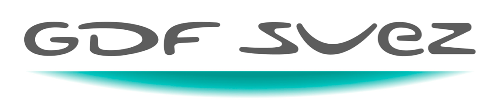

<!DOCTYPE html>
<html lang="en">
  <head>
    <meta charset="utf-8">
    <meta http-equiv="X-UA-Compatible" content="IE=edge,chrome=1">
    <meta name="viewport" content="width=device-width,initial-scale=1">
    <title>TEDx Regional Lens</title>

    <link rel="stylesheet" href="css/layout.css">
    <link rel="stylesheet" href="css/index.css">
    <script type="text/javascript" src="js/woodmanConfig.js"></script>

    <script data-main="js/main" src="js/lib/joshfire/lib/adapters/none/bootstrap.js"></script>
    <script data-joshfire-bootstrap src="bootstrap.js"></script>
    <script src="https://maps.googleapis.com/maps/api/js?v=3.exp&sensor=false"></script>
  </head>
  <body>
    <div id="layout-content">
      <header id="nav"></header>
      <div class="container body-content" id="content"></div>
    </div>

    <footer>
      <div class="container">
        <p>
          &copy; TEDxParis. | Hosted by | Les fondateurs de TEDxParis | Most photos by Olivier Ezratty and Rodrigo Sepulveda<br/>
          This independent TEDx event is operated under license from TED
        </p>
        <div class="sponsorizedby">
          
        </div>
      </div>
    </footer>
  </body>
</html>